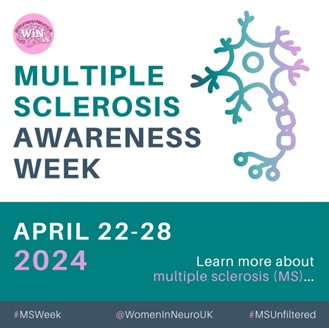
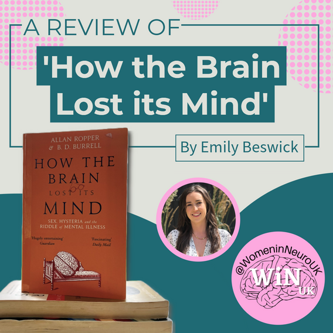
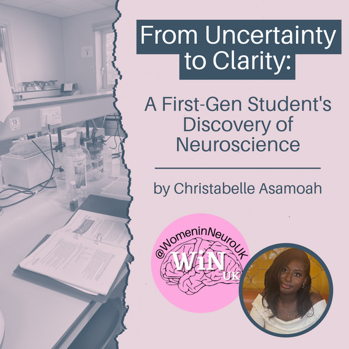
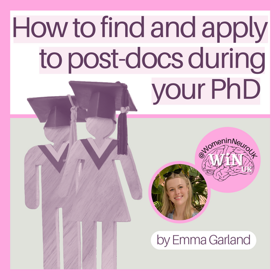

WHAT'S NEXT?
The end of another academic year is approaching, and for some of
you, that means finishing your undergraduate degree. From the whole
WiNUK team, we wish you the very best with any exams you have coming
up.
Whilst there are those who may already know what their next steps
will be, you might be unsure what direction to take. Please be
assured it is completely normal to feel this way, and you’re not
alone. This segment aims to inform you of the broad career options
related to neuroscience in case you haven’t considered them:
| FIELD |
JOB TITLE |
QUALIFICATIONS/SKILLS |
| ACADEMIA |
- Lecturer
- Teaching Associate
- Professor
|
- PhD in relevant discipline
- Teaching + Research ( lab, computer-based, mixture)
- Effective communication
|
| RESEARCH |
- Lab technician
- Research Assistant
- PhD fellowship
- Post-doctoral researcher
- Senior Scientist
|
-
Relevant degree, depending on role’s seniority: BSc,
MSc/MRes, PhD
- Lab experience
|
| SCIENCE COMMUNICATION |
- Medical Writer
- Communication Officer
- Scientific Journal / Newspaper Editor
- Journalist
- Museum Worker
- Podcaster Or Television Host
- Outreach With Schools Or The General Public
|
- (Neuro)science degree: BSc, MSc, or PhD
-
Master’s in Science Communication and Public Engagement
- Effective communication
|
| MARKETING |
- Marketing For Pharmaceutical Companies
- Copywriter For Scientific Brands
- Working For Medical Communications Agencies
- Biotech Salesperson
- Packaging Designer
- Data Analyst
- Science Social Media Manager
|
- Neuroscience degree/background
- Marketing
- Data Analytics
- Scientific communication
|
| NON-PROFIT ORGANISATIONS |
- Policy Maker
- Grants Officer
- Partnerships Officer
- Fundraiser
- Event/Conference Organiser
- Marketing And Communication Officer
- Director Within The Organisation
|
- Background in neuroscience
- Administrative skills
- Effective communication
-
Other required skills and experience for the respective
position
|
| ILLUSTRATION |
-
Illustrator for academic books or other science-related
materials
|
- Science qualification
- Artistic skills
- Portfolio of your artwork
|
Gap Year:Finally, after your degree, you could take
a gap year, where you could work another job that isn’t necessarily
neuroscience-related to save money, and if costs allow, you could
volunteer and/or travel.
If you have intrusive thoughts while doing this, remember that we
all have our own rhythm for achieving goals and it’s a privilege to
be able to explore our opportunities and the world when we have the
time to, which is more often the case early in our careers.
For more information from WiNUK on neuroscience career options,
check out a recording from our previous event on Alternative Careers
in Neuroscience:
https://youtu.be/NVAXmd7tV-0?si=wPr0LAayDpm6VciW
And our social media post on this topic:
https://www.instagram.com/p/C4lq7p_Nzvj/?utm_source=ig_web_copy_link&igsh=MzRlODBiNWFlZA==
EVENTS (PAST AND UPCOMING)
Neural Networking 2.0 (18th April)
-
Hosted by Aarushi & Ayesha, joined by Chloe Whitehouse Postdoc
fellow at MSD
- Talked about past experiences and future aspirations
- High engagement and positive feedback from participants
Synaptic Synergy: Virtual study study/work session (30th May)
- Time: 6-7 PM (GMT)
- Hosts: Anwesha & Ayesha
-
This event focuses on creating a supportive space to keep each
other accountable and motivated while studying for exams/
working towards deadlines. We aim to provide a productive
environment for your pending tasks along with fostering
meaningful connections within the community. Connect with
peers who are navigating similar challenges, and find the
encouragement you need to stay on track!
-
Link to sign-up form:
https://docs.google.com/forms/d/e/1FAIpQLSfGHi6Vc3W2i_WaWs9MWgbB0nqRa4ITYbIMI3_-V-tH164Xog/viewform?usp=sf_link
AI x computational neuroscience (June)
Imposter Syndrome (July)
Our event on women’s pain and neuroscience has been postponed
due to complications securing speakers. We are very keen to host
this virtual event later this year. If you know of inspiring
individuals working on this topic, whether in academia, industry
or charity, please forward their contact information to
event.womeninneuroscience.uk@gmail.com
Thank you!
SOCIALS
Celebrating reaching 1K followers on Instagram, X, and LinkedIn!
Thanks to each of our followers for the support and engagement on
our social media platforms! WiNUK has grown in the last two years,
and so have its social media platforms. From addressing critical
topics surrounding neurological disorders to offering glimpses
into the daily lives of neuroscientists, providing valuable
insights for postgraduate applications, and delving into the
intricacies of equity in neuroscience, our social media posts have
resonated with individuals from diverse backgrounds and stages of
life, united by a shared commitment to gender equity in the field.
A special acknowledgement is due to our dedicated social media
team, content creators, and graphics team for their tireless
efforts in crafting accessible and impactful content.
Let’s continue to push our message of the importance of gender
equity across neuroscience workplaces, research, and treatment!
MS Awareness Week
The last week of April was MS Awareness Week. MS
disproportionately affects women, highlighting the need for
research to focus on sex differences in neurological diseases. We
shared educational content during the week as well as an
informative video on our TikTok.

PYLT Series
WiNUK founder - Lizzie English, will be taking over this month’s
‘Present Your Lab Technique’ (PYLT) series. Keep posted on our
socials this month, as she’ll introduce single molecule
biochemistry assays!
Day in the Life (DITL)
Our Day in the Life series continued with our first external
feature from MRes student Amy. Check out our Instagram and TikTok
to see how a Master’s student spends her day in the lab. Following
on from this, our Instagram Admin Rachel took over to share her
day in the life as a third-year PhD student.
May is the awareness month for mental health, stroke and
Huntington's disease. Make sure to keep an eye out for the
upcoming informative content across WiNUK socials!
To celebrate the International Association for Pain (IASP)
designating 2024 as the global year for recognition of sex
disparities in pain, we will have a series of posts on our
socials. We will explore why chronic pain is such a global
burden, our reliance on opioids and address the ‘Gender Pain
Gap’.
SUPPORT WiNUK VOLUNTEERS
One of our volunteers, Storm, is raising funds for Mental Health UK,
in support of Mental Health Awareness Month! The company she works
at will be matching all donations, and so far, they’ve already
raised £1000! If you’re able to contribute, you can donate here:
https://fundraising.mentalhealth-uk.org/fundraisers/stormjohnson/move-it-for-mental-health
BLOG ‘MONTH IN REVIEW’
This month, our blogs delved into historical medical mysteries,
tackled accessibility in conferences, and highlighted inspiring
journeys in neuroscience.

We travelled back to the 1800’s to discover the ‘plague’
of neurosyphilis, the once medical mystery, in a review of
‘How the Brain Lost its Mind’.

We shared a first-generation student’s journey to
studying neuroscience and the things that have helped
her along the way.
A reminder:
- Did you go to ARUK 2024?
- What did you think?
-
Want to gain some writing experience by sharing your
experience on our blog?
Email us at...
blog.womeninneuroscience.uk@gmail.com

We made conferences more accessible by pointing you in the
direction of places to f ind funding.

We gave you advice on how to make applying to post-docs
easier, whilst still completing your PhD!
If you’ve missed these thought-provoking articles, visit the blog
to catch up: Blog | Womeninneurouk
(womeninneuroscience.wixsite.com/winuk/blog)
BLOG
Fancy writing for the WiNUK blog , but not sure what to write about?
Not to worry - the editors regularly put together a collection of
prompts to get you started.